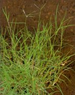
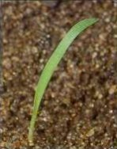
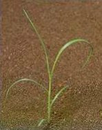

CSILLAGPÁZSIT
CYNODON DACTYLON (L.) Pers. (CYNDA)
ÉLETFORMA: Gl
TERMÉS: A pelyvák éréskor a füzéren maradnak. A
toklászos szem 1,8- 2,0 mm hosszú, mindkét vége hegyes. A háti toklász csónak
alakú, pergamenszerűen sima, gyenge fényű. A hasi toklász keskeny, lapos, csupán a
keskeny hasi oldalt zárja le. A csupasz szem mintegy 1 mm hosszú, barna színű és
lapított. Ezerszemtömege 0,3-0,4 g. Szaporodása szempontjából a magképzés
másodlagos jelentőségű.
CSÍRANÖVÉNY: Tavasszal a talaj fölmelegedésével egy
időben csírázik. Magról kelő növénnyel ritkán találkozunk, mivel elsősorban
tarackkal, valamint a kúszó szárak legyökerezése útján terjed. A fiatal növény
korán bokrosodik és kúszó szárakat fejleszt. A legfiatalabb (középső) levél
összehajtott. A levélnyelecske helyét egy fehér szőrkoszorú foglalja el, szőrei 1
mm hosszúak és a szélükön hosszabbak. Levéllemeze puha, többnyire kopasz, a lemez
színe ritkán gyengén szőrös. A levéllemezek 5- 16 cm hosszúak és 2-5 mm szélesek,
vállukon a legszélesebbek, nyúlt háromszögűek, hegyesek.
KIFEJLETT NÖVÉNY: Szalmaszára vékony, többszörösen
elágazó kúszó szárat képez, melyek a csomóknál (nóduszok) a talajjal érintkezve
legyökereznek. Virágzó szára 5-30 cm magas. Virágzata 3-7 ujjszerűen szétálló
füzér, úgynevezett füzéres ernyő. A füzérek 3-10 cm hosszúak. Júniustól őszig
virágzik. A füzérkék többnyire egyvirágúak, két, egy oldalra forduló sorban
ülők, pelyvái és toklászai ibolyás színűek. A toklászok szálka nélküliek,
ormójukon szőrösek. A talaj felső 20 cm-es rétegében dúsan elágazó, kemény,
drótszerű tarackot képez, melyek csomóit száraz, hártyás levélhüvelyek
borítanak. A tarackok tápanyagszintje és axilláris rügyeinek aktivitása
szezonálisan ingadozik. A regenerálódást (terjedést) szolgáló rügyek május,
június hónapokban endogén dormanciában vannak, vagyis anyagcseréjük minimális.
ELTERJEDÉSE: Őshazájának elsősorban a trópusi Afrikát
tekintik. Ma már a 45. északi és déli szélességi fok között elterjedt, és a
világ második legfontosabb gyomnövényének tekintjük. Elsősorban a laza, könnyen
melegedő homoktalajokat kedveli.
 |
 |